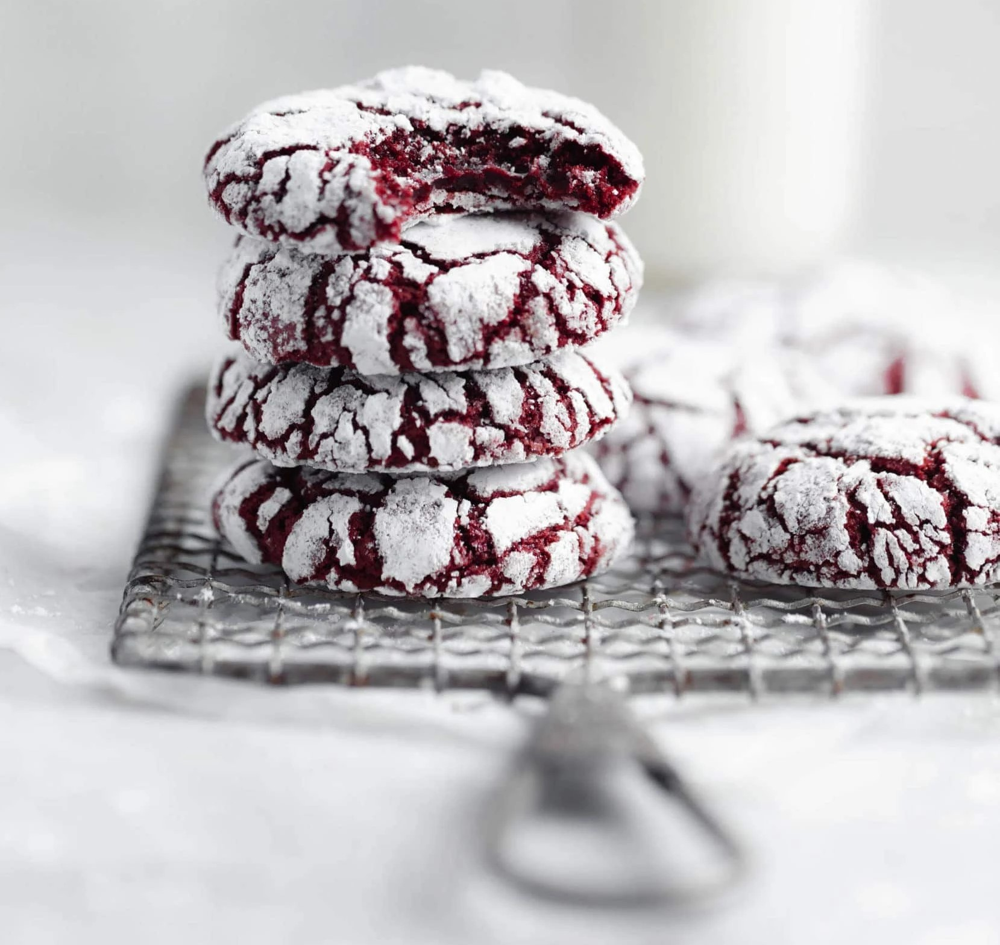

Red Velvet
Crinkle Cookies

Red Velvet Cookies
By Jenna Nguyen
Once upon a time, I wanted to bake my friends something for some last minute plans. Oh, but what to do! I couldn’t go to the store today, and tomorrow is the day! Maybe, I could bake something easy and delicious with what I already had at home… hmmm… I got it! Chocolate Crinkle cookies! Oh, but I always make those! Surely, there’s something more interesting that I could make. Then it hit me. Red. Velvet. Crinkle. Cookies. So, my next action was looking up a recipe online that met my criteria:
- Dough does not need to be chilled before baking.
- The final texture must be moist and brownie-like.
- The ingredients could only consist of what I already had at home.
That's when I found a recipe on BromaBakery.com. I tested it and here's how it went! :)
Red Velvet Crinkle Cookies as made by Broma Bakery.
The recipe calls for:
- 1/2 cup butter, softened
- 3/4 cup brown sugar
- 1/2 cup granulated sugar
- 2 eggs, room temperature
- 2 teaspoons vanilla extract
- 1/2 teaspoon professional red food coloring*
- 2 cups all-purpose flour
- 1/3 cup cocoa powder
- 1 1/2 teaspoons baking powder
- 1/2 teaspoon salt
- 1/2 cup granulated sugar
- 1/2 cup powdered sugar
Here’s a slightly adjusted recipe that I changed because something did not sit right with me. First, this recipe cannot technically be called a true red velvet because red velvet calls for some type of acid like buttermilk or white vinegar. In a true red velvet, this acid would chemically react with the cocoa powder which gives red velvet its traditional flavor and brings out the natural red hues in cocoa powder (hence the name, Red Velvet). Without the acid, this would just be a chocolate crinkle cookie dyed red, which is not what I wanted.
Slightly adjusted recipe with conversions in grams since I measure everything with a scale:
- 113g (1 stick) butter, softened
- 150g brown sugar
- 100g granulated sugar
- 2 eggs, room temperature
- 2 teaspoons vanilla extract
- 1/2 teaspoon professional red food coloring*
- 265g all-purpose flour
- 35g cocoa powder
- 1 1/2 teaspoons baking powder
- 1/2 teaspoon salt (opit if the butter is already salted)
- 2 teaspoons white vinegar
For Rolling:
- 100g granulated sugar
- 50g powdered sugar
Here are the instructions as taken straight from this website’s recipe:
- Preheat the oven to 350°F and line a baking sheet with parchment paper. Set aside.
- Cream the butter, brown sugar, and granulated sugar together in a large bowl until light and fluffy. Scrape down the bowl and add the eggs one at a time, beating between each addition. Add the vanilla and red food coloring, and mix well.
- In a separate bowl sift together the flour, cocoa powder, baking powder, and salt to combine. Add the dry ingredients to the wet and beat together until combined.
- Fill one bowl with granulated sugar and one bowl with powdered sugar. Use a 1 ounce cookie scoop (or tablespoon) to scoop cookies out. Roll the balls first in the granulated sugar and then in the powdered sugar to completely coat the cookie balls. Place on the prepared cookie sheet an inch apart. Bake for 10 minutes or until the cookies have puffed up and cracked, but are still a little gooey in the center.
- Allow to cool and enjoy with a glass of milk!
For the most part, this set of instructions is perfect but here are a few words of caution if you choose to try this recipe.
- 10 minutes at 350 degrees in my small oven seemed to be too hot/too long. My cookies still came out VERY yummy, but I would have liked them to be much more moist and brownie-like in the middle. If I were to do it again, I would either lower my oven temperature or bake them for maybe 8.5 minutes instead of 10.
- When you cream the butter, brown sugar, and granulated sugar together, make sure to whip the butter FIRST. The mistake I made was putting a softened stick of butter in a bowl, pouring all the sugar on top and trying to mux it that way. THIS IS NOT A GOOD IDEA! I was left with clips of uncombined butter and sugar that was nearly impossible to cream together. I ended up having to put the bowl (it was microwave-safe) in the microwave for 20 seconds to warm up the butter a little bit for easier incorporation. Save yourself the trouble and just whip the butter before adding any sugar.
- If you choose to use my slightly adjusted version, simply add in the white vinegar as you add in the eggs.
- Once you add your dry ingredients to your wet ingredients, don't be scared to add a LITTLE bit more flour if it seems too sticky. Your dough should still be tacky but if you press your finger into the dough very quickly, it should not stick and you should still be able to roll the dough into a ball if you work quickly.
- There is a tip on the website that tells you to not chill your dough. I can't stress this enough! I may have added a tiny bit too much flour so the cookies didn't spread as much as I would have liked. That being said, try to flatten your balls before you bake them a little bit because they really don't spread all that much.
- Finally, the recipe calls for the balls of dough to be rolled in granulated sugar and THEN in powdered sugar. I can’t recommend this enough! When you bite into the cookies, you get a little bit of crunch from the powdered sugar crust before you bite into the gooey center and it just makes it that much better.
That’s the end of my trial and error with this recipe, but honestly, these cookies were SO SO good. I brought them to a friends house and they were gone instantly! If you follow my tips, or even if you follow the original recipe step by step, you will not be disappointed by how good these cookies are. That being said, good luck if you try this! Here's a picture of how mine came out! :)

Jenna Nguyen's Homemade Red Velvet Crinkle Cookies
| Jenna Nguyen |
|---|
| Journalist Since December 2018 |
| Senior. Invests her time into her hobbies: baking, painting, and anime (among others). “Never be afraid to try something new and get out of your comfort zone. You will never truly know what you love unless you’ve tried all of it!” Hey Bruins! I’m a senior at TGB highschool and from now on, I am a lead editor and the author of the baking column! My love for my various passions is sure to show through in my work. So, I hope you enjoy it! |